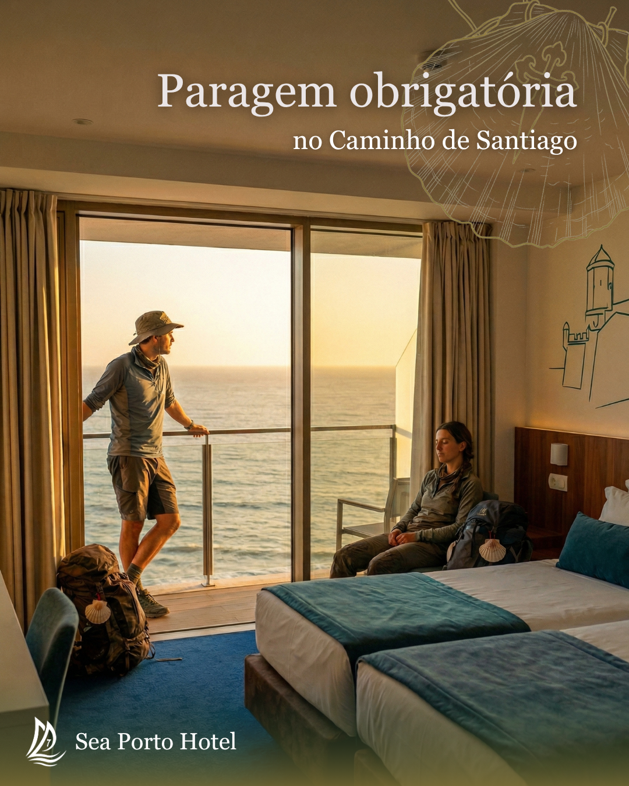
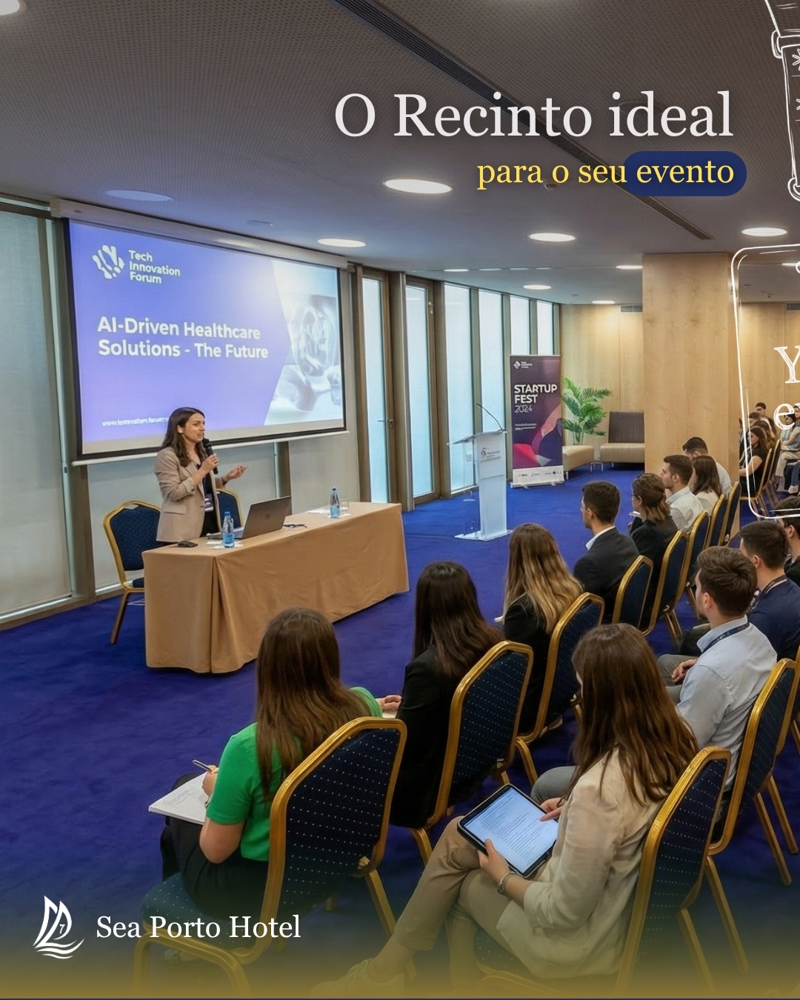
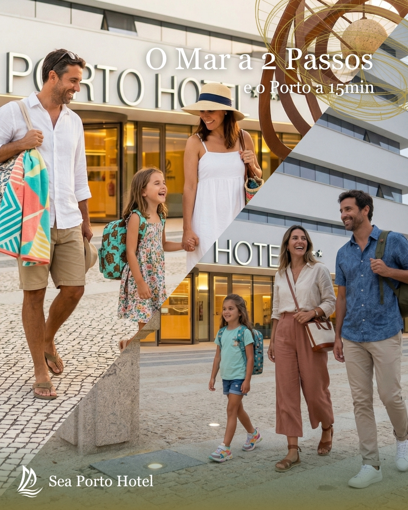

04 — Os Posts
Estratégia, estética
e intenção.
Três posts que demonstram visão estratégica, estética consistente e intenção editorial.
Storytelling

Post 01 — Storytelling
Há viagens que cansam. E há vistas que repõem tudo.
O Caminho muda quem o percorre. A paisagem, o ritmo, o reencontro consigo mesmo.
Em Matosinhos, o Sea Porto Hotel recebe-o de braços abertos. Para descansar, recarregar e continuar, ou simplesmente vivenciar.
Reservas: link na bio ou hotel@seaportohotel.com
EN: Some travels wear you down. And some views restore everything. In Matosinhos, Sea Porto Hotel welcomes you with open arms.
#SeaPortoHotel #CaminhoSantiago #Matosinhos #VisitMatosinhos #HotelMatosinhos
Conteúdo Técnico

Post 02 — Conteúdo Técnico · Carrossel
Transforme as suas reuniões em eventos memoráveis.
No Sea Porto Hotel, o sucesso do seu evento começa com o espaço certo. Dispomos de salas versáteis para até 120 participantes, equipadas para garantir a qualidade do seu evento.
#SeaPortoHotel #HotelMatosinhos #EventosEmpresariais #CorporateEvents
Posicionamento

Post 03 — Posicionamento
A 15 minutos do Porto. A dois passos do Atlântico.
Matosinhos tem o ritmo certo para quem quer descobrir o Norte de Portugal sem abrir mão do mar.
Reserve já a sua estadia → link na bio
#SeaPortoHotel #Matosinhos #VisitMatosinhos #HotelMatosinhos #VistaMar